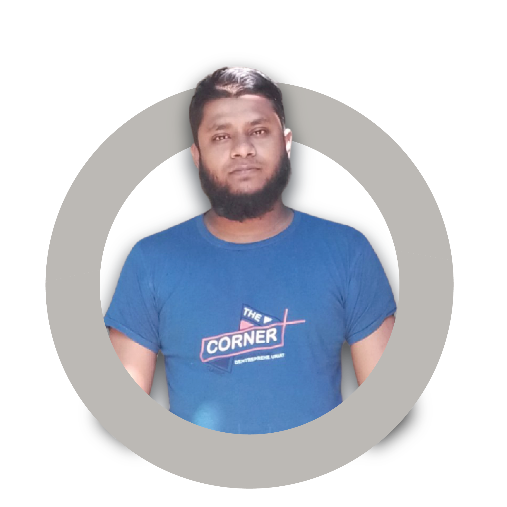
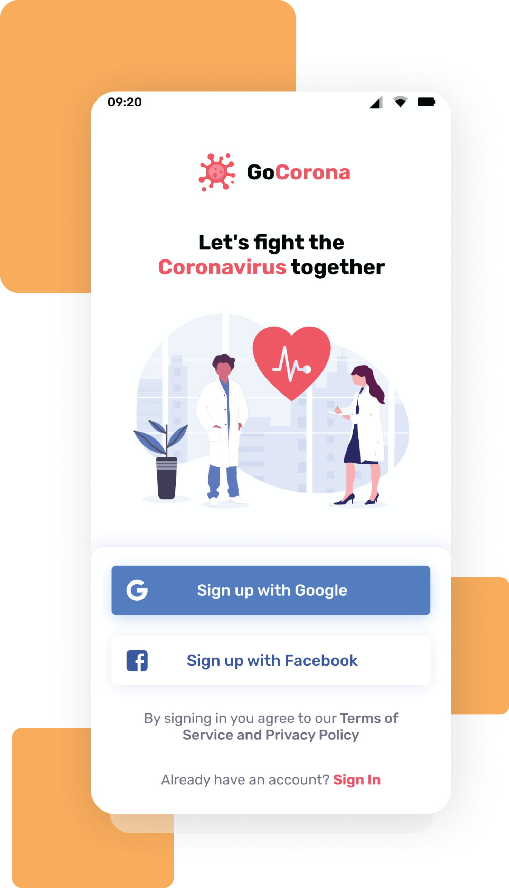

Stay Focused on
Mission 2022
According to a city spokesperson, the agreement between the city and the development group led by Tom Valenti, called for the project to be complete as of Dec. 31, 2021. With that milestone not being met, the city plans to terminate the existing development agreement.
Explore nowScroll down to explore more about us


Mission
This will provide you with relevant experience as well as guidance and mentorship from experienced Full Stack...

vision
Complete online or in-person courses to build your specialisation in one or more programming languages..

Goals
AIt is possible to work as a Full Stack Developer without formal qualifications, however many employers prefer ...

Stay safe with
Go Corona.
This page includes advice from WHO on ways to protect yourself and prevent the spread of COVID-19. The downloadable infographics below provide guidance on general and specific topics related to the pandemic.
App Fetures